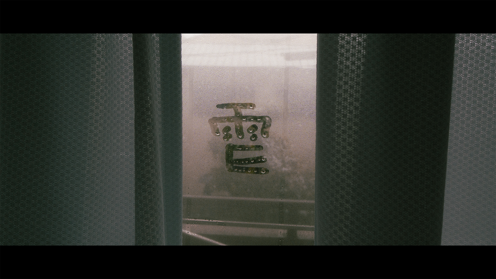

WEBサイト更新しました
2025/02/24
１ヶ月ぶりの更新らしいです
今日はなんか大雪みたいで外出する気も出ないので、放置していたWEBサイトを色々お直しする日にしました。
ついこないだまでは修展のWEBサイト作ったりSNS触ってたのでね、、、
多少ガタガタのまま放置してたんですがそろそろ見ても耐えるくらいには整えようかなと。
そういえば修展が終わってからまだ１週間なんか。
こういうときって「あっという間に」みたいなことを言われがちだが自分はいつも「まだそんな時間経ってないんだ〜」とか思いがちです。 (過去のことはすごく遠方に感じるタイプなんですね多分)
話が逸れましたがWEBサイトの各ページを整えたついでにブログを書いたので暇なは読んでもらえると。 (暇じゃない人は暇になる覚悟ができたらきてください)
最近ぼや〜っと思っていることでも並べておきましょかね。
・ 写真、動画どうするよ？
・ １日12時間寝たい。
・ 自己分析って結局〇〇だよな
・ 結局はやりたいことなんてなんじゃないか(なくてもいいんじゃないかな)
では順にさらっと話します。
写真、動画どうする？
いや〜これほんまになんですよね。
多分このまま働き始めたら撮る機会は減るし、かといって本業にするぞ！っていう覚悟もないし明確に撮りたいものが無い気がするんだよな、少なくとも商業的な範囲では。
いかんせん標準画角大好きニキだからなぁ、目的があるというより手段が先行してるというか。
どんな場面でもこういう絵が撮りたい、こういう目線で見たいって感じなんですよ。
ってなると写真に関してはスナップ、できても記録写真、ポトレ(←ほんまか？)、風景写真とかが合ってるのかなぁとか。
動画でも同じかな、ストーリーを伝えるためのとかじゃなくて、今この目の前のこれがおもろいんだから撮るしかないだろ！くらいなんだよな〜。
とかいいつつストロボとかライト買ったりしちゃって物撮りもできるようにしようとしてるし、ぶれっぶれですよ！自分！
までも「自分ぶれぶれだわ、、、」って普通にあるあるな話だと思うので結局は覚悟があるかの話なんだろうな〜とは思ってます。
くらいです！修展の自由に撮って作ってのあの時間は楽しかった、非常に。
次いきます。
１日12時間寝たい
絶対に叶わない素朴な希望。
以上！
え？短すぎるって？
いやいやこれ深堀られても困るでしょ、さっさと次いくよ〜ん
自己分析って結局〇〇だよな。
自己分析ね〜、なんかわざわざ言葉にすると仰々しいというか大袈裟だよな〜。
何するにも「自分ってなんだろう」みたいな話はあるしその自問自答は常日頃からあるはずなのに急に出てきたみたいに自己分析とか言い始めちゃうし。
ほんで結局自己分析って何かっていうと、仮置きの連続なんじゃないかと。
話は簡単で、まず自己分析の万能なやり方があればそんなのに困る人はいないはずで。
っていうことは結論を最初から正しく出そうとする行為は的外れな可能性があって、となればそのときそのときで「自分の方向性を決めるに十分な判断材料」として並べるものでしかない気がするんだよね〜。
こういう経験ないですか？あのとき自分のこと〇〇って言ってたけど意外とそうじゃないかもな〜みたいな。
みんなそんなもんじゃないのかな？全部が間違っててってわけでもないけど、いつ、どんな感性で、どう評価して、でなんとでも変わることなんだからあんまりそこの結論が出ないことを怖がってもしゃーないんじゃないかしら〜とかいう。
とは言いつつ自分は悩みましたけどね！自分ってなんだ？！？！って！
今のところはマメな性格であることは確実らしいですけど。
ほんなら最後の話題いきます。
やりたいことなんてないんじゃないの？
いや〜これほんまにそうだよな。
これ大きさが色々あって、ご飯選ぶときも旅行先選ぶときも、将来なにしたいみたいな話でもそうで、別にこれっていうのがない気がする。
てか別になくてもよくないかと思ってきた。
なんか自分のやってきたことって「ちゃんとそれを身につけたい！」的なことが弱くて「自分でそれを言語化していきたい」的な方が強いんだよな。
数学も中学生の頃から授業なんて聞いてなくて自分で教科書読んであれこれするのが好きで、写真も動画もそんな感じで。
これよく考えたら教えられる側の体質として終わってるよなwとか思ったり、、、。までも今までの行動とは辻褄があうんだよな〜これ。
今のところこのスタンスで生きてても仕事はもらえそうなのでしばらくはこのままで生きれるかなと思うけどそのうちあれなんですかね。
これじゃダメになっちゃうんですかね、自分ではとても楽しいとは思ってるんですけど。
参考にはならないけど、なるべく「そんなやつもおるんや」ということが提供できたらツラツラと書いてた意味もありますよ。
以上！
PCで打つよりスマホで打ち込んだ方がこういうのってスラスラいけるね。Twitterの感覚に近いからかな。
おそらく次のブログは卒業前後とかになるんじゃないかな。てかこのブログもいつまで続けられるんですかね〜。